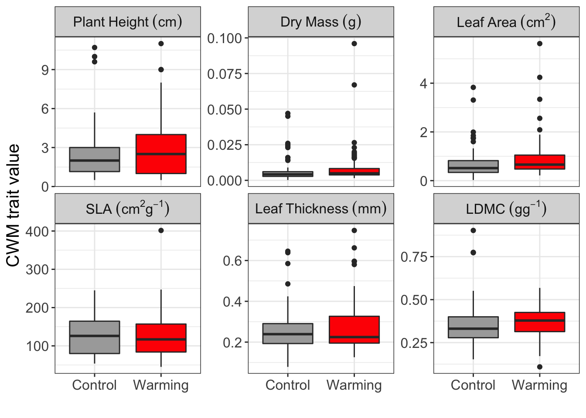

Plant functional trait responses to climate warming in an Arctic environment on Svalbard
The data and results from this report have been published in (Jónsdóttir et al. in press)
Introduction
Global warming affects populations, communities, and ecosystems across the world. Arctic plant communities are threatened more because climate is changing at a faster rate in the Arctic. Plant functional traits are a powerful approach to predict how plant communities will respond to warmer temperature in the future.
Here, we collected plant functional traits in the high Arctic, in Endalen (78°11’N, 15°45’E), east of Longyearbyen, Svalbard. The traits were collected in a common habitat, the Dryas heath, which is relative dry and has little snow cover in winter. In 2001 ten plots (75x75 cm) were selected and half of the plots were randomly assigned to a warming treatment (OTCs) and the other half to control. The research question in this project was, if plant functional traits respond to the warming treatment.
Methods
We collected six plant functional traits related to potential physiological rates and environmental tolerance of plants including plant height, dry mass, leaf area, leaf thickness, leaf dry matter content (LDMC) and specific leaf area (SLA). For each experimental plot, we collected three individuals of each species covering more than 1 % of vascular plant cover. The traits were collected according to the trait handbook (Perez-Harguindeguy et al. 2016).
Results
The plants were on average 2.54 ± 0.21 cm tall and had 0.47 ± 0.03 cm2 large leaves. The warming treatment significantly increased the leaf mass by 1.46 and the leaf area by 1.44 (Figure 1; Table 1). The plants did not differ in height, leaf thickness, SLA or LDMC between the treatments.

| Trait | Term | Estimate | Std.error | Statistic | P value |
|---|---|---|---|---|---|
| Dry mass (g) | Intercept | 2.553 | 0.221 | 11.545 | 0.000 |
| Treatment | 0.547 | 0.343 | 1.598 | 0.112 | |
| Leaf thickness (mm) | Intercept | 0.254 | 0.012 | 21.152 | 0.000 |
| Treatment | 0.025 | 0.019 | 1.326 | 0.187 | |
| Dry mass (g) | Intercept | 0.006 | 0.001 | 5.262 | 0.000 |
| Treatment | 0.003 | 0.002 | 1.602 | 0.111 | |
| Leaf area (cm2) | Intercept | 0.689 | 0.084 | 8.222 | 0.000 |
| Treatment | 0.246 | 0.127 | 1.936 | 0.055 | |
| SLA (cm g-1) | Intercept | 129.332 | 5.985 | 21.610 | 0.000 |
| Treatment | -2.291 | 9.061 | -0.253 | 0.801 | |
| LDMC (gg-1) | Intercept | 0.350 | 0.013 | 27.544 | 0.000 |
| Treatment | 0.011 | 0.019 | 0.549 | 0.584 |